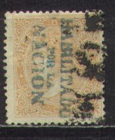
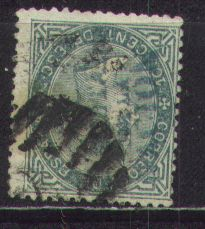
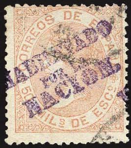

Return To Catalogue - Spain overview - Spain 1867 Queen Isabella
Note: on my website many of the
pictures can not be seen! They are of course present in the
catalogue;
contact me if you want to purchase it.
In 1868/69 (from September 1868 onwards), some of these stamps were overprinted 'HABILITADO POR LA NACION'. It was intended to erase the face of the Queen after the revolution of September 1868. Examples:



This overprint exists in 2 official types (Madrid and Andalucia issue). Besides that, there are many 'local' overprints of a private or fiscal character. All these overprints are rare to extremely rare.
This overprint exists on the following stamps of 1867 with the image of Queen Isabella: 12 cu, 19 cu red, 19 cu brown, 10 cen, 20 cen, 25 m blue and red, 25 m blue, 50 m brown, 50 m brown (1868), 100 m and 200 m. Also it exist on the numeral designs of 1867: 5 m and 10 m.
This overprint exists on the following stamps of 1867 with the image of Queen Isabella: 12 cu, 19 cu red, 19 cu brown, 10 cen, 20 cen, 25 m blue and red, 25 m blue, 50 m brown, 50 m brown (1868), 100 m and 200 m. Also it exist on the numeral designs of 1867: 5 m and 10 m.


This overprint exists on the following stamps of 1867 with the image of Queen Isabella: 12 cu, 19 cu red, 19 cu brown, 10 cen, 20 cen, 25 m blue and red, 25 m blue, 50 m brown, 100 m and 200 m.


This overprint exists on the 50 m brown and 20 cen of 1867 with the image of Queen Isabella. Also it exist on the 10 m numeral designs of 1867.

A manual 'Hpn' written with a pen

This overprint is very rare. It exists on the 25 c blue and red, 50 m brown, 100 m, 200 m, 12 cu and 20 cen values
This overprint is also very rare (sorry, no picture available). It exists on the values 20 cen and 50 m.

Example of a forged overprint
Most of these overprints are very rare and forged overprints exist as in the one above.
The stamp forger Fournier made forgeries of these overprints:
Forged Fournier overprints, reduced size


{kind=link}
{kind=link}